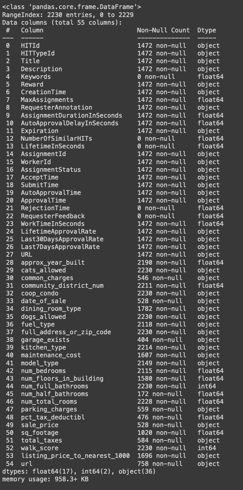
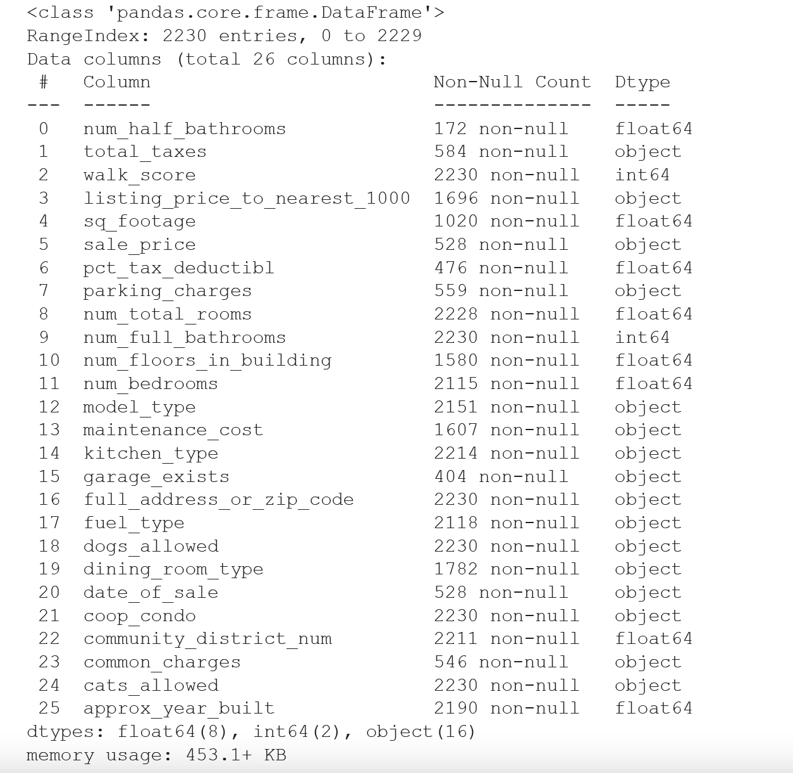
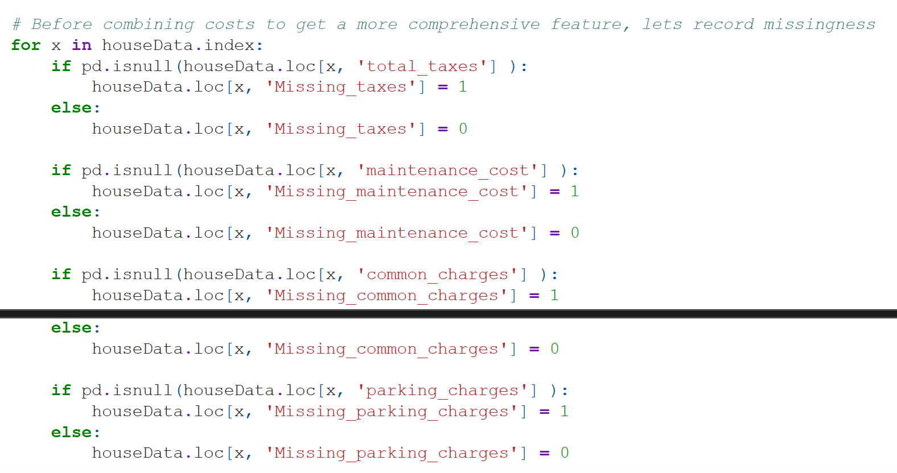

In this project, I used a dataset which was harvested with MTurk in 2016-17 which had many features about apartments with a maximum sale price of $1M which were sold between February 2016 and February 2017. The dataset was limited to the zip codes found on mainland Queens, NY. It excludes the Rockaways, a peninsula near JFK airport that's geographically distinct from the rest of the neighborhoods. My target variable was sale_price_$ or, in other words, how much an apartment was sold for. I picked this project because I felt that I could do better than zillow.com, a website which generates their own secret-sauce predictions that they whimsically call “zestimates.” The challenge of beating their estimates is that apartment prices are dependent on so many factors and determining the exact importance of any one factor can be hard. If I could determine the factors that make people pay a lot more for an apartment, then I can make a predictive model which will accurately and precisely predict apartment prices based on the presence or absence of these factors. The models were developed using python packages like RandomForestReggressor, MissForest, Pandas and NumPy. The dataset had 2230 observations, many incomplete observations and missing data points.
When I first opened the data, there were many features contained in the set which were simply products of MTurk. MTurk is a marketplace where users are paid to collect the data needed to form an observation, a single row of our dataset. One can only hope that these minions did good job collecting the data. Each of our observations represents an apartment unit and all its characteristics or features. As mentioned above, the goal of our model is to take these features and predict the unit's sale_price_$. All the features which were generated by MTurk had no actual bearing on the unit, so they were the first to get dropped from the dataset. Features likes 'HITId', 'HITTypeId', 'Reward', 'CreationTime', 'AcceptTime', 'SubmitTime', and even 'URL ' where of no use to me.
I further whittled the list of features to 26. This list contained information like the number of half bathrooms, the walk score of how close it is to necessary or awesome places, the sale price, the listing price if not yet sold, the square footage, the percentage of tax deductible, the number of rooms, full bathrooms, bedrooms, floors in the building, the kitchen type, model type, dining room type, whether it's a cooperative or condo, any parking charges, maintenance costs, common charges, and total property taxes, whether it has a parking garage, how's it heated, are cat and or dogs allowed, when was it built and, most importantly, where is it located.
The next, and arguably biggest challenge we had to overcome was missing data. Many of the features where missing many if not most of the data points. Most significantly, of the 2230 observations in the dataset, only 528 of them had a sale_price, meaning that no matter how much cleaning I did, I was only going to get 528 observations to train my model on. Because of this, I had to make sure that these 528 observations were as clean and accurate as possible. This is all part of the challenge faced by data scientists all the time and it is known as “missingness”.
So, how did I address this missingness in the data? Well, the first thing I did was to record or “featurize” the missingness. This is to say that sometimes, the fact that a particular observation is missing is strongly correlated with a particular outcome. More generally, sometimes a low value will be even lower if it's a missing low value. In my case, apartments were marketed based on what they have, not based on what they don't have. As such, an apartment either had a half bathroom or the information was missing. It either had a parking garage, or the information was missing.
The ideal way to handle missingness is to impute it or fill in the missing value with some type of predicted value. If one were to impute the missing half bath or garage as “none”, since there are no recorded values besides “yes”, I chose to impute them that way and not record the missingness. However, with all the various ancillary costs associated with the units like parking charges, maintenance costs, common charges, and property taxes, I decided to do two things.
I had trouble making predictive use of the full address of the apartment, so I created a feature of just the zip code. This trouble was part of the broader difficulty I had working with categorical features and continuous features in the same dataset. The biggest imputation I did by far was by using the MissForest method from the missingpy library. It attempts to predict the missing data points based on all the data that's not missing. I intentionally left as many features in the dataset as possible, even when they likely had little effect on sale_price, becuase the more data it had, the better MissForest would do. Perhaps because of my inexperience and or MissForest' s finicky-ness, I had to seriously work to encode the categorical features as integers yet prevent them from being imputed as continuous features. Suffice to say that I think I was successful, and I got a robust looking 528 full observations. I even figured out a way to decode them back to their categorical names, though this didn't actually turn out to be useful because all tree modeling in python requires them to remain encoded.
So, I got my dataset and now I had to train my model[s] on it. First however, I created a train-test split, with k = 4 test set size, so 3/4 of the data was training data. The first model I tried was a DecisionTreeRegressor model which uses regression to choose and weight the nodes of a decision tree. I was neck deep in studying the data and different models, perhaps I saw sinosoidal patterns in the data that led me to make this decision. regardless, it wasn't for nought. When I ran this model a few times, I was getting variance in its preface metrics. I made a graph to find the best depth for the tree based on the depth which maximized in-sample R2 and minimized in-sample RMSE.
 "
"
Using this chart, I determined that the ideal tree depth was 6. When I ran the model with that hyperparameter, I got the following tree:

And the performance of that sklearn Regressor tree:
In-sample R2 = 0.929561
In-sample RMSE = 48295
OOS R2 = 0.742588
OOS RMSE = 86622.109789
This left much to be desired, but the most important feature was the number of full bathrooms. This could make sense as it's one of those details which is practically given in the name of an apartment listing. The second most important feature was cooperative or condo. Every model I tried felt that this was a very important feature. Next was square footage, followed by zip code, additional costs, community district, number of floors in the building, approximate year of construction and I didn't see any more unique ones as it made numerous further splits in the dataset.
The next model that I experimented with was a multivariate OLS model. For such a mathematically complicated model (opinion), it was surprisingly easy to set up and the statsmodel provided an excellent summary of what it's results. I actually tried two different linear model packages. See which one was better.
Using statsmodels.api.OLS:
In sample OLS R2: 0.745128
In sample OLS RMSE: $91867.96
OOS R2: 0.782819
OOS RMSE: $79565.6
Using sklearn.linear_model.LinearRegression:
In sample OLS R2: 0.745389
In sample OLS RMSE: $91820.87
OOS R2: 0.7827
OOS RMSE: $79587.27
Between the two OLS model, the most important features were coop_condo, num_full_bathrooms, num_bedrooms, num_half_bathrooms, Missing_taxes , Missing_common_charges. These features all sound reasonable and OOS, it seems to predict decently well so I would say that OLS is relatively useful.
The final model which I experimented with was a RandomForestReggressor model. Performance-wise, it did the best. It still was not great though. In the same way that I was able to optimize the single tree, I was able to optimize the Random forest an order of magnitude more. I was able to find the ideal number of trees to average, the ideal depth of each tree and the ideal number of mtry features per-split which would drive the variance and hence our error down.
RandomForestReggressor
In sample R2: 0.974242
In sample RMSE 29272.587125
OOS R2: 0.871798
OOS RMSE 60542.335003
I think that, based on the OOS performance, this model is neither underfit nor overfit, rather it's just right (relatively). I think, due to the amount of optimization and hyper-parameters required, it is not a parametric model. The unfortunate tradeoff of all this optimization is that interpretability has gotten lost in the forest. Overall, I had a lot of fun doing this project. Just opening the data set and messing around with python would have been enough but I really cleaned it up well, having gotten MissForest to work for both categorical and continuous features. Unfortunately, I think this issue is probably where I'm losing performance. The fact that most of the features in the data set are nominal, I'm skeptical that all this regression can be good. Often, after doing many models on a dataset, I'd notice that some encoded categorical features became continues and it was just a stop and start game of whack-a-mole of refactorizing them until the end. I think a big aspect which I will be working on for the future is modeling these nominal variables in trees. In the meantime, I do not believe that my model is ready to ship